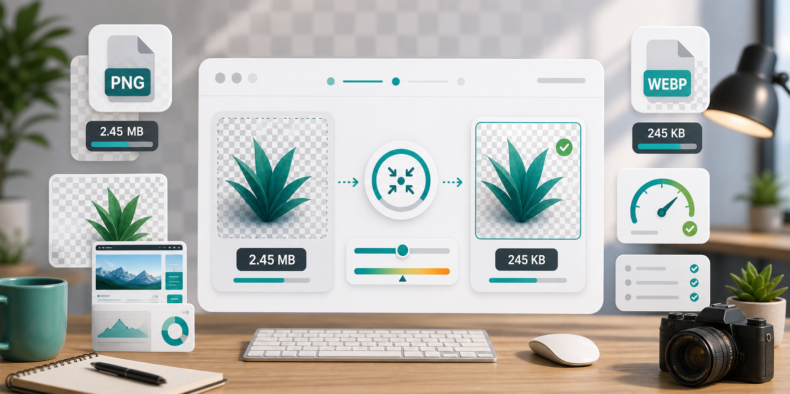

PNG and WebP
Compress PNG or convert to WebP?

PNG is popular because it feels safe. Screenshots look sharp, logos keep clean edges, and transparent backgrounds work reliably. The downside is file size. A single PNG screenshot from a modern laptop can be several megabytes, and a page with several heavy PNG files can feel slow even on decent internet.
The first question is whether the image needs to stay PNG. If it has transparency that must remain transparent, PNG may still be the right format. If it is a flat screenshot, product image, chart, or graphic that does not need transparency, converting to WebP can often reduce the size dramatically while keeping the image crisp enough for web use.
PNG compression is usually strongest when the image has large areas of flat color, limited color variation, or simple shapes. It can be less impressive on complex screenshots, photos saved as PNG, and large interface captures. In those cases, the format itself is the issue. A photo saved as PNG is often much larger than the same image as JPG or WebP.
WebP is a good middle ground for many websites. It supports strong compression and can also support transparency. Modern browsers handle it well, and it is widely used for performance-focused sites. If your image is going on a web page, WebP is often worth testing. For downloads, print workflows, or older systems, PNG may still be safer.
When working with screenshots, check text carefully. If the text becomes fuzzy, increase the quality or reduce resizing. Screenshots with small UI labels can become hard to read when compressed too aggressively. For tutorial images, clarity matters more than shaving off every last kilobyte.
For logos and icons, keep an original master file. If you have access to an SVG, use that for websites when possible. If you only have PNG, avoid repeated conversions back and forth. Export one optimized version for the site and keep the original untouched.
One area where people get surprised is ecommerce. Product images sometimes arrive as PNG because they were exported from a design tool or background remover. If the product photo has no transparent background, JPG or WebP may be much lighter. If the transparent background is important, WebP can still be worth testing, but check that your website theme, marketplace, or upload platform supports it.
For blog graphics, the answer depends on the design. A simple chart with flat colors may stay clean as PNG. A large illustrated banner may work better as WebP. A screenshot with a lot of tiny labels may need gentler compression than a decorative image. There is no single best setting because images are not all built the same way.
Also think about where the image will be viewed. A graphic inside a narrow mobile article does not need the same dimensions as a full-screen desktop banner. Reducing the width first can make either PNG or WebP smaller before compression even starts. Format choice matters, but dimensions are still one of the biggest levers.
A simple decision rule works well. Use PNG when you need exact transparency, crisp simple graphics, or compatibility. Use JPG for photographs when transparency is not needed. Use WebP for modern websites when you want smaller files and broad browser support. If you are unsure, test both PNG and WebP output, then compare size and appearance at normal viewing size.
CompressPixel lets you try this quickly. Upload a PNG on the PNG compressor, set the output to WebP if appropriate, choose a reasonable width, and compare the final file size. For many website images, the WebP version will be noticeably smaller. For images where PNG wins, keep it. For a broader performance workflow, read image compression for SEO and website speed. The best format is the one that fits the job, not the one that sounds most technical.
Sources and further reading
- Google Image SEO best practices explains how image quality, page context, and useful metadata support discovery.
- web.dev on LCP is a helpful reference when deciding whether large images are slowing the first screen.